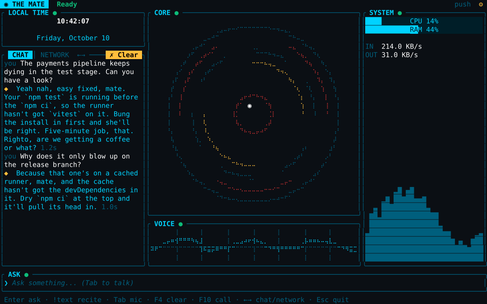
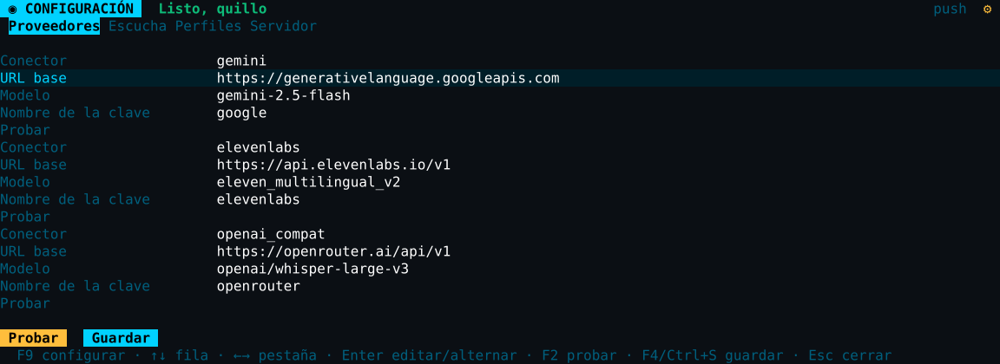

Habla con naturalidad
Usa el micrófono cuando quieras, dicta una pregunta y escucha la respuesta. También puedes escribir.
PREVIEW · ALPHA
Un compañero de voz para tu trabajo de desarrollo. Pregunta, dicta y escucha la respuesta sin salir de tu flujo.
Rust · Windows · Linux · macOS

HECHO PARA EL DÍA A DÍA
Tipsy combina voz, texto y un panel ligero en una aplicación que puedes adaptar a tu forma de trabajar.
Usa el micrófono cuando quieras, dicta una pregunta y escucha la respuesta. También puedes escribir.
Conecta proveedores alojados o servicios locales compatibles. Tus claves se guardan en el almacén seguro del sistema.
Escoge entre perfiles con idioma, tono y voces propios. O crea uno que suene a tu región.
EMPIEZA EN UNOS PASOS
La guía usa la versión alpha actual. Necesitas Rust, micrófono, altavoces y una clave de proveedor o un servicio local compatible.
Ver configuración avanzada en GitHub ↗Instala Rust 1.96.1 o posterior y conecta un micrófono y unos altavoces.
Instalar Rust ↗Clona el repositorio y entra en la carpeta:
git clone https://github.com/valdepeace/tipsy-assistant.git
cd tipsy-assistantPara OpenRouter, obtén una clave en su web. El comando la guarda en el almacén de credenciales de tu sistema.
cargo run -p tipsy-assistant -- key set openrouterTambién puedes configurar un endpoint compatible en el paso siguiente.
cargo run -p tipsy-assistantPulsa F9 para elegir proveedores, modo de escucha y perfil. Pulsa Tab para hablar.
CONFIGÚRALO A TU MANERA
Chat, voz y transcripción se pueden conectar por separado. Si tu servicio ofrece una API compatible con OpenAI, puedes usar su endpoint; también hay conectores nativos para Gemini y ElevenLabs.
Consulta los detalles ↗
TUCON GRATITUD
A mis compañeros de trabajo: gracias por las conversaciones, las ideas y el compañerismo que inspiraron Tipsy.
TODAVÍA ESTAMOS EMPEZANDO
Tipsy es un proyecto abierto. Explora el código, comparte una idea o cuéntanos qué tal funciona en tu equipo.
Visita el repositorio ↗